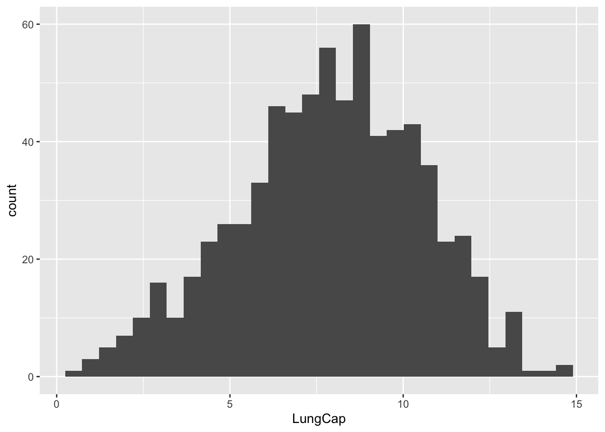
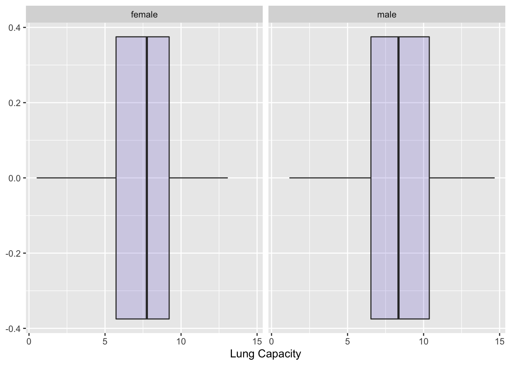
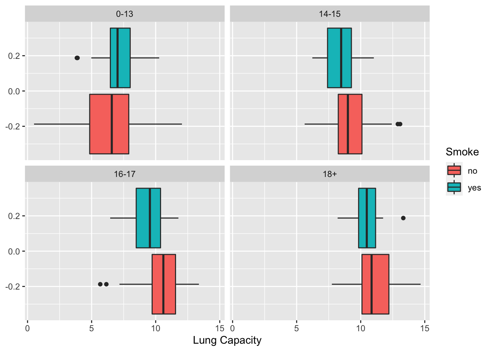

Code
library(tidyverse)
library(ggplot2)
library(dplyr)
library(readxl)
knitr::opts_chunk$set(echo = TRUE)Abigail Balint
February 23, 2023
Reading in LungCapData –
# A tibble: 2 × 6
LungCap Age Height Smoke Gender Caesarean
<dbl> <dbl> <dbl> <chr> <chr> <chr>
1 6.48 6 62.1 no male no
2 10.1 18 74.7 yes female no Looking at some basic descriptive stats –
Rows: 725
Columns: 6
$ LungCap <dbl> 6.475, 10.125, 9.550, 11.125, 4.800, 6.225, 4.950, 7.325, 8.…
$ Age <dbl> 6, 18, 16, 14, 5, 11, 8, 11, 15, 11, 19, 17, 12, 10, 10, 13,…
$ Height <dbl> 62.1, 74.7, 69.7, 71.0, 56.9, 58.7, 63.3, 70.4, 70.5, 59.2, …
$ Smoke <chr> "no", "yes", "no", "no", "no", "no", "no", "no", "no", "no",…
$ Gender <chr> "male", "female", "female", "male", "male", "female", "male"…
$ Caesarean <chr> "no", "no", "yes", "no", "no", "no", "yes", "no", "no", "no"…[1] 7.863148[1] 7.086288[1] 2.662008[1] 0.507 14.675`stat_bin()` using `bins = 30`. Pick better value with `binwidth`.
The distribution looks relatively normal. There is a clear concentration of the sample around 7-8 and the outliers are only a very small portion of the sample.

The probability distribution is pretty similar between male and female, but males skew to a higher lung capacity overall and the median line is at around 8 whereas female is closer to 7.5.
# A tibble: 2 × 3
Smoke mean n
<chr> <dbl> <int>
1 no 7.77 648
2 yes 8.65 77We would expect the lung capacities for non smokers to be higher but the mean for smokers is actually a little bit higher.
Recoding the age groups –
# A tibble: 6 × 7
LungCap Age Height Smoke Gender Caesarean AgeGroup
<dbl> <dbl> <dbl> <chr> <chr> <chr> <chr>
1 6.48 6 62.1 no male no 0-13
2 10.1 18 74.7 yes female no 18+
3 9.55 16 69.7 no female yes 16-17
4 11.1 14 71 no male no 14-15
5 4.8 5 56.9 no male no 0-13
6 6.22 11 58.7 no female no 0-13 Mean lung capacity by age group –
`summarise()` has grouped output by 'Smoke'. You can override using the
`.groups` argument.# A tibble: 8 × 4
# Groups: Smoke [2]
Smoke AgeGroup mean n
<chr> <chr> <dbl> <int>
1 no 0-13 6.36 401
2 no 14-15 9.14 105
3 no 16-17 10.5 77
4 no 18+ 11.1 65
5 yes 0-13 7.20 27
6 yes 14-15 8.39 15
7 yes 16-17 9.38 20
8 yes 18+ 10.5 15For both smokers and non-smokers, the lung capacity goes up as the age increases with 18+ having the highest average capacity. In all age ranges besides 0-13 (the broadest range), the mean is higher for non-smokers than smokers.

I’m seeing that the results by age group are slightly different than in part C. Above I can see that the average for all age ranges is higher for non-smokers, besides age group 0-13. I can see in my results in part D that the sample size for 0-13 non-smokers is extremely high, much higher than any other group of smokers or non-smokers, so with this higher sample size comes more variance. The median lines are actually pretty close but the outliers are probably affecting the mean.
Creating a data frame –
priorconviction prisoners
1 0 128
2 1 434
3 2 160
4 3 64
5 4 24I found it to be .1975 or 19.75%
To get this I added the sample of 0 or 1 prior conviction and it comes out to .69 or 69%.
To get this I added the sample of 0 or 1 or 2 prior convictions and it comes out to .89 or 89%.
To get this I added the sample of 3 or 4 prior convictions and it comes out to .108 or 11%.
To get this I summed all of the numbers of prior convictions by the amount of prisoners (1042) then divided this by total sample (810) to get a final expected value of 1.28 prior convictions.
I used the above code to find a sample variance of 2.5 and a population variance of 2.
I used the standard deviation function to calculate the above.
:::
---
title: "Homework 1"
author: "Abigail Balint"
desription: "Distributions and probability"
date: "02/23/23"
format:
html:
toc: true
code-fold: true
code-copy: true
code-tools: true
categories:
- hw1
- homework1
- abigailbalint
- lungcap
- prisoner
- ggplot2
---
```{r}
#| label: setup
#| warning: false
library(tidyverse)
library(ggplot2)
library(dplyr)
library(readxl)
knitr::opts_chunk$set(echo = TRUE)
```
## Question 1 - Lung Capacity
Reading in LungCapData --
```{r, echo=T}
lung <- read_excel("_data/LungCapData.xls")
head(lung,2)
```
Looking at some basic descriptive stats --
```{r, echo=T}
glimpse(lung)
mean(lung$LungCap, na.rm = T)
var(lung$LungCap, na.rm = T)
sd(lung$LungCap, na.rm = T)
range(lung$LungCap, na.rm = T)
```
a) What does the distribution of LungCap look like?
```{r}
ggplot(lung, aes(x = LungCap)) +
geom_histogram()
```
The distribution looks relatively normal. There is a clear concentration of the sample around 7-8 and the outliers are only a very small portion of the sample.
b) Compare the probability distribution of the LungCap with respect to Males and Females
```{r}
ggplot(lung, aes(x=LungCap)) +
geom_boxplot(fill="slateblue", alpha=0.2) +
xlab("Lung Capacity") +
facet_wrap("Gender")
```
The probability distribution is pretty similar between male and female, but males skew to a higher lung capacity overall and the median line is at around 8 whereas female is closer to 7.5.
c) Compare the mean lung capacities for smokers and non-smokers. Does it make sense?
```{r}
lung %>%
group_by(Smoke) %>%
summarise(mean = mean(LungCap), n = n())
```
We would expect the lung capacities for non smokers to be higher but the mean for smokers is actually a little bit higher.
d) Examine the relationship between Smoking and Lung Capacity within age groups: “less than or equal to 13”, “14 to 15”, “16 to 17”, and “greater than or equal to 18”.
Recoding the age groups --
```{r}
lunggroup <- lung %>%
mutate(`AgeGroup` = dplyr::case_when(
`Age` >= 0 & `Age` < 14 ~ "0-13",
`Age` >= 14 & `Age` < 16 ~ "14-15",
`Age` >= 16 & `Age` < 18 ~ "16-17",
`Age` >= 18 ~ "18+" ))
head(lunggroup)
```
Mean lung capacity by age group --
```{r}
lunggroup %>%
group_by(Smoke, AgeGroup) %>%
summarise(mean = mean(LungCap), n = n())
```
For both smokers and non-smokers, the lung capacity goes up as the age increases with 18+ having the highest average capacity. In all age ranges besides 0-13 (the broadest range), the mean is higher for non-smokers than smokers.
e. Compare the lung capacities for smokers and non-smokers within each age group. Is your answer different from the one in part c. What could possibly be going on here?
```{r}
ggplot(lunggroup, aes(x=LungCap, fill=Smoke)) +
geom_boxplot() +
xlab("Lung Capacity") +
facet_wrap("AgeGroup")
```
I'm seeing that the results by age group are slightly different than in part C. Above I can see that the average for all age ranges is higher for non-smokers, besides age group 0-13. I can see in my results in part D that the sample size for 0-13 non-smokers is extremely high, much higher than any other group of smokers or non-smokers, so with this higher sample size comes more variance. The median lines are actually pretty close but the outliers are probably affecting the mean.
## Question 2
Creating a data frame --
```{r}
priorconviction <- c(0,1,2,3,4)
prisoners <- c(128,434,160,64,24)
q2 <- data.frame(priorconviction, prisoners)
head(q2)
```
a) What is the probability that a randomly selected inmate has exactly 2 prior convictions?
```{r}
160/810
```
I found it to be .1975 or 19.75%
b) What is the probability that a randomly selected inmate has fewer than 2 prior convictions?
```{r}
(434+128)/810
```
To get this I added the sample of 0 or 1 prior conviction and it comes out to .69 or 69%.
c) What is the probability that a randomly selected inmate has 2 or fewer prior convictions?
```{r}
(128+434+160)/810
```
To get this I added the sample of 0 or 1 or 2 prior convictions and it comes out to .89 or 89%.
d) What is the probability that a randomly selected inmate has more than 2 prior convictions?
```{r}
(64+24)/810
```
To get this I added the sample of 3 or 4 prior convictions and it comes out to .108 or 11%.
e) What is the expected value1 for the number of prior convictions?
```{r}
sum(q2$priorconviction*prisoners)
1042/810
```
To get this I summed all of the numbers of prior convictions by the amount of prisoners (1042) then divided this by total sample (810) to get a final expected value of 1.28 prior convictions.
f) Calculate the variance and the standard deviation for the Prior Convictions.
```{r}
var(q2$priorconviction)
var(q2$priorconviction)*(5-1)/5
```
I used the above code to find a sample variance of 2.5 and a population variance of 2.
```{r}
sd(q2$priorconviction)
```
I used the standard deviation function to calculate the above.
:::